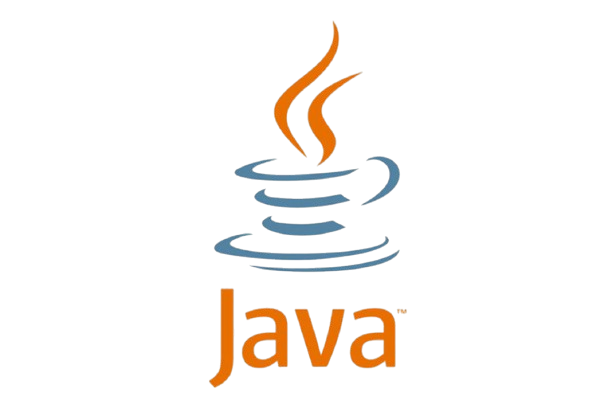
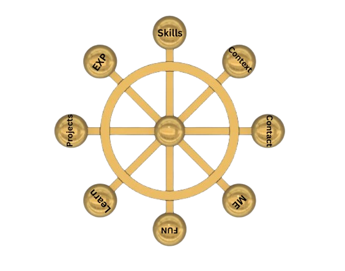
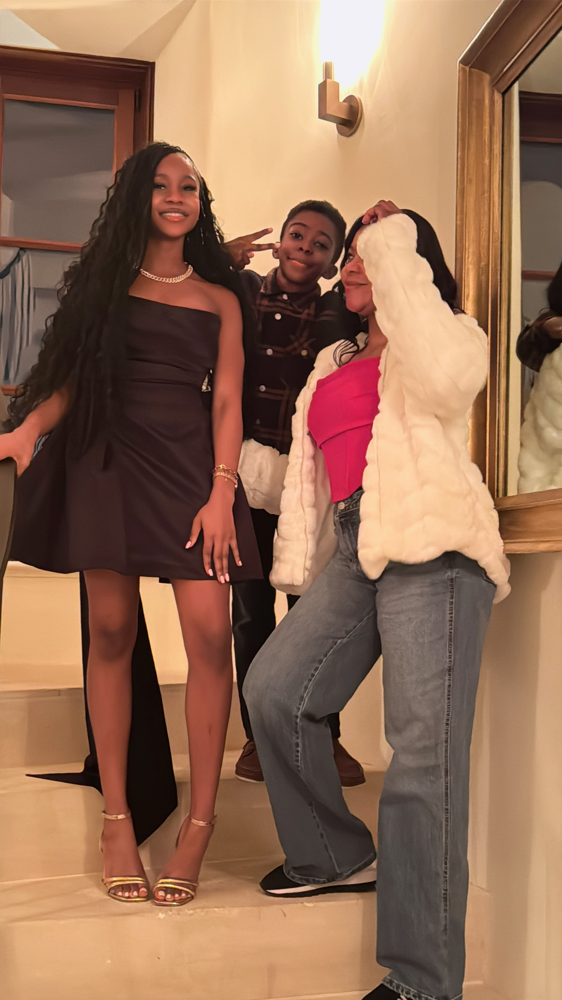
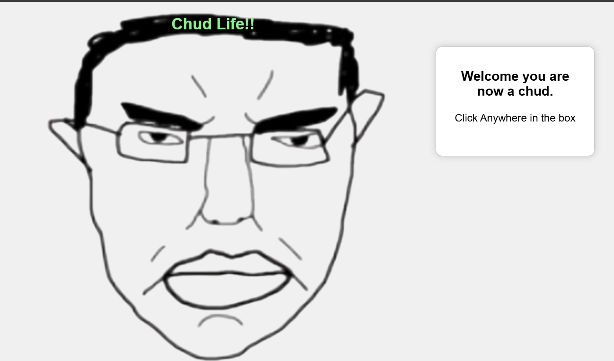
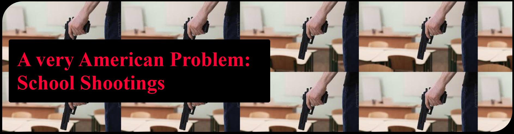

Java
JavaScript

HTML
CSS

Teamwork

Communication

 e
e
Math, Science, Communication, and love these are things I find valueable. There are things in this world that are so meaningless, but in every thing I do and I love I try to find and bring meaning. My goals is be a part of the creation of new ground breaking technolgies that help solve problems in our world. Wheather that be through, quantum computing, nuclear fusion reactors, Artificial Intelligence, or plainly helping people in person. What I bring is curiosity, care and introspective analysis of not only myself but the with the people around me allowing me to adapt anywhere.





Java
JavaScript
HTML
CSS
Teamwork
Communication
VEX Robotics- Competed at the Indiana State Championship. Programmed robot controls on gaming controller interface for robot’s movement. In additon, to programming PID control system to make accurate autonomous motions for robot to score at on average 20 points during competitions. All programs were executed using C++ and VEX V5 libraries.
I qualified for the Indiana state speech 2026 championship and gained 100+ NSDA points in the first season competing. The categories I competed in for the 2025-26 were Impromptu and International Extemporaneous. I Qualified for the state competiton by placing in the top 6 of those competing in International Extemporaneous at the Indiana State Speech and Debate Association's (ISSA) Sectional Speech Tournament. Unfortunately, I could not compete to logistical circumstances out of my control.
Competed at regional and district competitions in the mid-Atlantic region on FIRST Robotics challenge. Helped mentor potential future team members at my town’s middle school team as Head Mentor on the team. Specifically I mentored 10+ 7th and 8th graders in First Lego League. Organized 2 First Lego League teams. 5-8 joined the high school team in the 2025-2026 season. In addition, supported in the construction of the robot and fundraising for the tiem raising $500+.
Web Development
Planning
Communicaton

This project was made during my time in the Nextech Catapult program as an intern.
I was tasked to make a choose your own adventure game using CSS,HTML, and JavaScript.
I decided on the topic of this project to be about being a CHUD
(a common slang term used to describe someone as a loser or a lazy and unproducive indivdual).
I decided on the topic as it describes an negative aspect of myslef that I try to fight.
From this project I learned that I should have a clear plan for anything I build,
if I don't things can get really complex really quickly.

This project wad developed during my time in the Nextech Catapult program as an intern. This project required us to use HTML and CSS to develop a website that was meant to encourage change.
Hence the name of the project assingment was called website for change. I chose to do the issue of school shooting in the U.S. incomparison to other countries.
This was done to bring to mind how drastic of an issue the U.S.'s school shooting problem is by comparing data of the topic in the U.S. to other countries who are known to have this problem most frequently.
I learned through this project that though a website may be static have no moving parts or fancy animations that doesn't mean it can look good and creative.